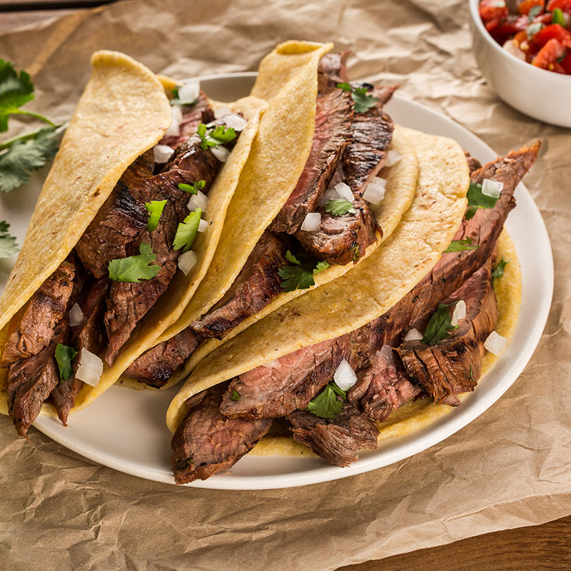

Tacos

Description
Tacos are a versatile food that can be made with me or even vegan. They are
quick to prepare and even quicker to eat
Ingredients
- Chicken, Beef, Beans or Tofu for filling
- Taco seasoning
- Romaine Lettuce
- Cheese or Vegan Cheese
- Corn or flour tortillas
- Tomatoes
Instructions
- Cook the chicken, beef, beans or tofu with taco seasoning
- Wash and cut vegetables
- Warm tortillas
- Enjoy!